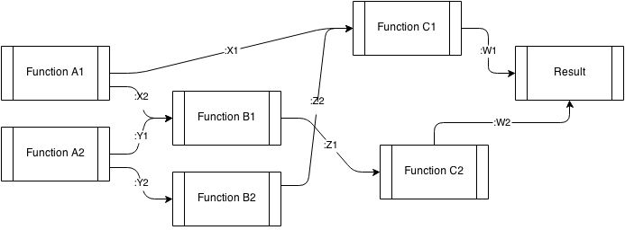
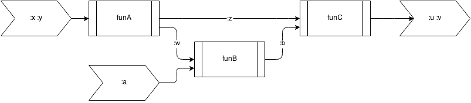

DAG-Runner
Life is too short to be wasted on piping the output of one function into the other. Concentrate on writing (awesome) functions and let dag-runner do the (dirty) work of constructing the function execution flow.
Yes, this is a Clojure library designed to execute functions that dependend upon the output of each other as specified by a DAG (directed acyclic graph).

Installation
Leiningen coordinates:
[dag-runner "0.1.0-SNAPSHOT"]For Maven users:
<dependency>
<groupId>dag-runner</groupId>
<artifactId>dag-runner</artifactId>
<version>0.1.0-SNAPSHOT</version>
</dependency>Usage
First prepare a bunch of awesome functions. The input argument of each function in the flow should be taking key-value pairs and the output should also be hash-maps. For example:
Here we would like to run through three functions with to get the ultimate output.
(defn funA [{:keys [x y]}]
{:z (+ x y)
:w (- x y)})
(defn funB
"this function would take :w of the output from funA."
[{:keys [w a]}]
{:b (* w a)})
(defn funC
"this function would take :z from funA and :b from funB and the
output :u :v are the ultimate output that we care about."
[{:keys [b z]}]
{:u (* b z)
:v (- b z)}
)The topology of the above function flow can be visualized as:

The function dag-run will create a super function aggregated-fun
(or any name you like) that takes all necessary inputs for the above
flow (:x :y :a), automatically run through all functions above, and
generate the ultimate output (:u :v).
(use 'dag-runner.core)
(dag-run aggregated-fun
[{:function funA :input [:x :y] :output [:z :w]}
{:function funB :input [:w :a] :output [:b]}
{:function funC :input [:b :z] :output [:u :v]}])
(aggregated-fun :x 1 :y 2 :a 3)
;; {:u -9, :v -6}ToDo
- Add parser layer to directly take input and output key from function definitions.
- Add safeguard layer to make sure that the flow can finish.
License
Copyright Hesen Peng © 2014
Distributed under the Eclipse Public License either version 1.0 or (at your option) any later version.